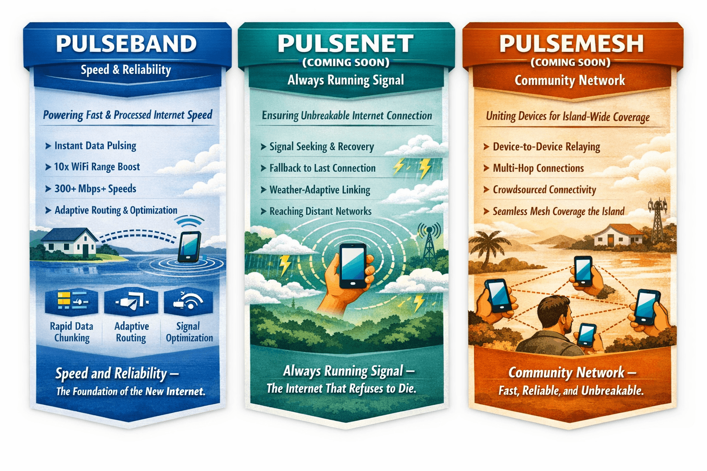
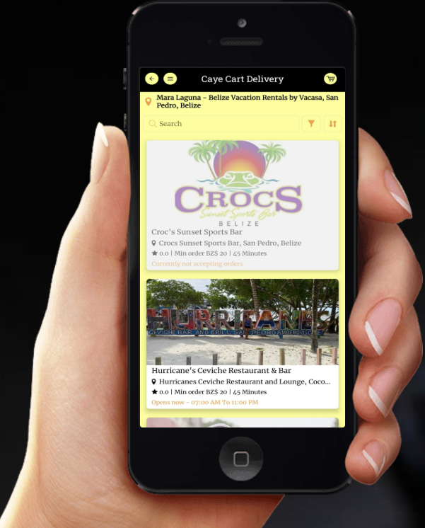

More than Delivery
One OS, Many Front Doors!
Tropic Pulse started with Food Delivery! Now it powers Dashboards, Marketplaces, Local Networks, and Real-Time Overlays that sit on Top of any Product.



Not an app. Not a website. A GPU‑accelerated operating system that runs inside your browser — powering identity, performance, and live intelligence for anything you build.

Upload a file and watch Tropic Pulse wrap it with GPU acceleration, PulseBand metrics, and network intelligence — right inside your browser.
You can run this test once every 15 minutes per device.
Tropic Pulse started with Food Delivery! Now it powers Dashboards, Marketplaces, Local Networks, and Real-Time Overlays that sit on Top of any Product.
